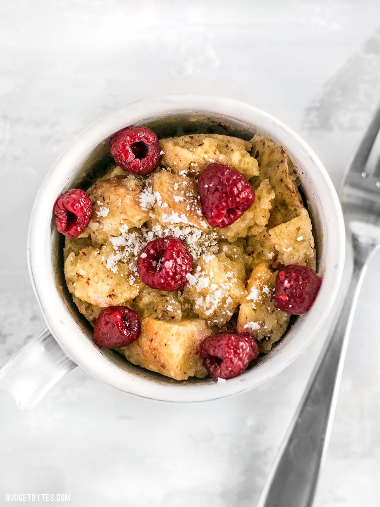

Microwave Mug French Toast
Time: 5 minutes
Cost: $7
Servings: 1

Ingredients
1 tsp. butter
3 Tbsp. whole milk
1 egg
1 tsp maple syrup
1/4 tsp cinnamon
1/4 tsp vanilla extract
Pinch ground nutmeg
Instructions
1. Place the butter in a large mug and microwave for 15-20 seconds, or until it is melted.
2. Add the milk, maple syrup, cinnamon, vanilla, nutmeg, and the egg to the mug and whisk until everything is well mixed.
3. Add the bread pieces to the mug and gentloy stir until all the pieces are saturated with the milk mixture. Be careful not to stir too roughly or the bread pieces
may fall apart. Let the bread sit and absorb the liquid for about 1 minute.
4. Microwave the mug for 60-90 seconds, or until the mixture is solid.
5. Serve immediately, or deck it out with your favorite toppings
Source: https://www.budgetbytes.com/2017/04/5-minute-microwave-french-toast-mug/